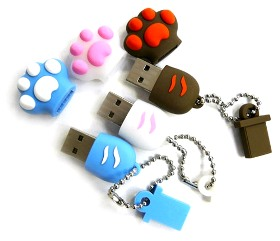
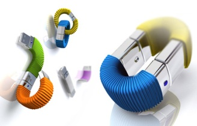
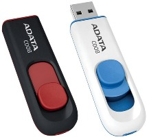
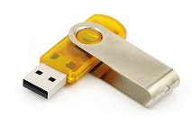
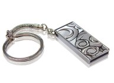

Всё о выборе usb -накопителя.

В XXI веке главным богатством мирового сообщества становится информация. Появляются новые и усовершенствуются старые технологии по хранению, переносу, записи информации. На смену малообъемным дискетам приходят диски,
usb-флеш накопители, переносные USB жесткие диски.
Наибольшей популярностью пользуются флеш - накопители (USB Flash Drive) в силу своих маленьких габаритов и больших объемов памяти. Флешки имеют различные характеристики, которые нужно учитывать при покупке.
В первую очередь нужно определиться с объемом памяти. На данный момент существуют следующие емкости: 1Гб, 2Гб, 4Гб, 8Гб, 16Гб, 32Гб, 64Гб. Компания Kingston Technology выпустила в продажу usb-флеш накопители с максимальным объем памяти - 256Гб. Если вы часто пользуетесь
накопителями информации для переноса данных, то оптимальным выбором будет USB Flash Drive с чипами памяти на 8Гб или 4 Гб.
Необходимо определится с интерфейсов USB. Наибольшее распространение получили флэш драйверы с интерфейсом USB 2.0. Но пару лет назад появились флешки с интерфейсом USB 3.0. Преимущество стандарта USB 3.0 перед USB 2.0 – более высокая скорость передачи данных. В комплектацию современных компьютеров уже входят usb-разъемы для флеш-накопителей с интерфейсом 3.0, но стандарт 3.0 еще не получил широкое распространение. Если вы делаете покупку накопителя информации с расчетом на будущее, то лучше взять USB Flash Drive с интерфейсом USB 3.0. К тому же флеш-накопители
USB 3.0 совместимы с usb-разъемами 2.0 у компьютеров.
Следующим важным показателем является скорость записи и чтения данных. Встречаются варианты флешек с одинаковой ценой, но с разной скоростью записи/чтения. Поэтому уточняйте скорость записи/чтения у продавца или смотри в прилагаемой инструкции.
Скорость записи может варьироваться от 6 Мбит/c до 12 Мбит/с, скорость чтения от 10 Мбит/c до 25 Мбит/c.
Обратите внимание на корпус устройства. Наиболее распространенный вариант – пластмассовый. Имеются варианты с металлическим корпусом.
Самыми удароустойчивыми, влагонепроницаемыми считаются прорезиненные корпусы.
Необходимо определиться с вариантом коннектора. USB Flash Drive с выдвижным коннектором или USB Flash Drive с неподвижным коннектором с крышечкой. В первом варианте со
временем может заедать выдвижной механизм, при втором варианте есть вероятность потерять крышку.


Посмотрите в инструкции, совместимы ли операционная система на вашем компьютере с покупаемым устройством. Большинство флеш-накопителей совместимы с ОС Windows XP, Windows Vista, Windows ME, Windows 7, Windows 2000, MAC OS9.0 и выше; Linux 2.4.
После определения оптимального набора характеристик посмотри, поищите такие варианты у разных
производителей, проведите мониторинг цен. Наиболее популярные и зарекомендовавшие себя на рынке компании, выпускающие флэш драйверы: Kingston, Transcend и Sandisk, Silicon Power.


Читайте также:
Оперативная память.
Твердотельный SSD накопитель, преимущества и недостатки.
Следующая статья:
Покупка портативного или внешнего жесткого диска .